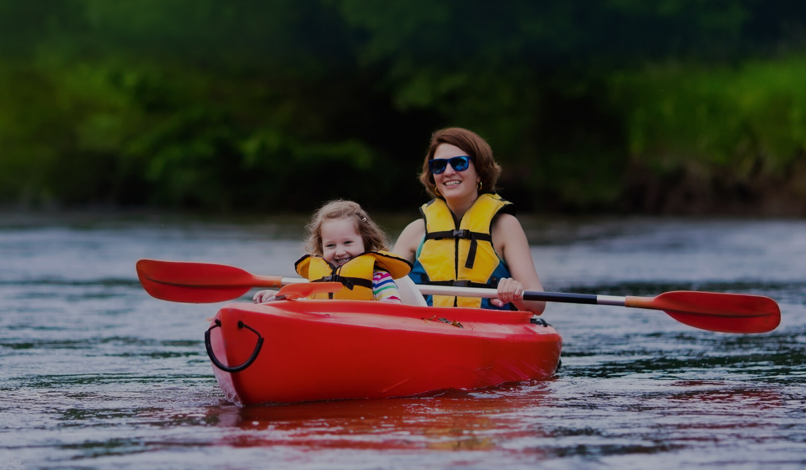

Activities
Outdoor
Indoor
Cape Cod Bike Trails
Woods Hole Aquarium
Heritage Gardens
J.F.K. Museum
Whale Watching
Cape Cod Mall
Go-Karting
Cape Cod Museum of Art
Bumper Boats
Lighthouse Tour
Bass River Kayaking
Pirate Museum
Beaches
Toad Hall Hall Classic Car Museum

HOME